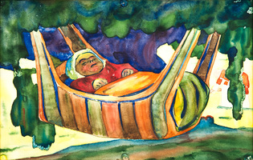
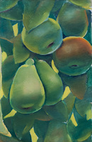

Творби

1.

2.

3.

4.
Владимир Димитров-майстора
(01.02.1882-29.09.1960)
Владимир Димитров – Майстора е български художник, едно от големите имена в българската живопис. Твори през първата половина на ХХ век. Изявява се в портретния и пейзажния жанр и в битовата композиция. Неговите портрети и композиции притежават изразителни цветове, идеалистичен рисунък и силно символно излъчване. Майстора има принос и като военен художник - създава стотици скици на българските войски, предавайки емоциите в окопите и бита на войната. Той е и първият официален български военен кореспондент.